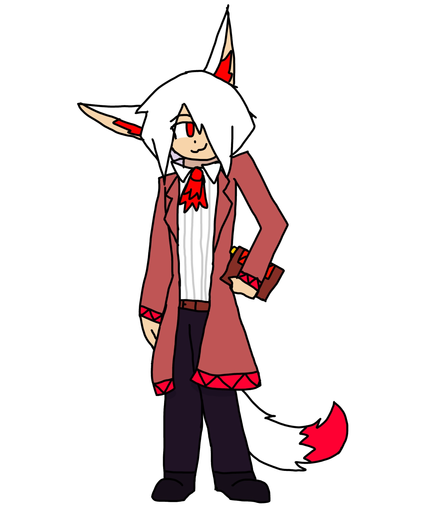
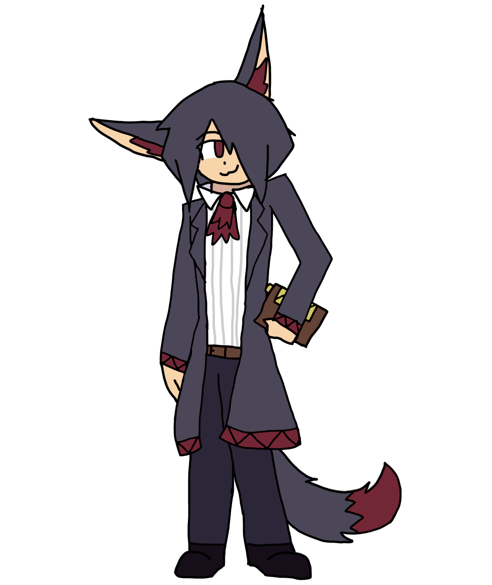

Tomo is entirely defined by his unique resource, Mana. Tomo uses a portion of his Mana to cast any of his special moves (including 6S). If a move costs more Mana than he currently has, it will not trigger and instead will whiff. If his Mana is depleted, he will enter Exhaustion—a debilitating state that leaves him highly vulnerable to massive damage.
Once he is at a safe range, Tomo can use his specials to expertly control the midrange, forcing the opponent to think twice about their approach. With the right momentum, he can easily keep up a solid web of denial; once his opponent is caught, Tomo is free to close in for a full combo combined with the choice of okizeme or resource recovery. When he has Mana Crimen and 50% meter on his side, Tomo can skip this choice altogether and opt for a much longer and more effective pressure sequence which at worst leaves him at neutral odds with the opponent.
Tomo's kit gives him the freedom to decide how the game unfolds, provided he has the resources to do so. In the right hands, Tomo is a highly versatile and cerebral fighter who rewards patience, precision, and execution.
Tomo


| Type | Magic |
|---|---|
| Health | 575 |
| Movement Speed | 0.85x |
| Unique Movement | - |
| Stage | The Library |
| Reversals | 2141236H |